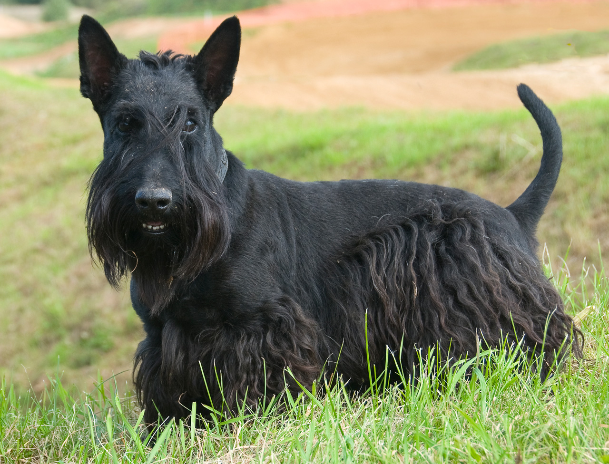

Шотландский терьер (скотч-терьер)
- Продолжительность жизни: 13-14 лет
- Группа: Комнатно-декоративная
- Окрас шерсти: варьируется от темно-серого до черного, белый
- Длина шерсти: длинная
- Линька: легкая
- Рост кобеля: около 30 см
Шотландского терьера называют еще абердинским терьером и скотти. Это сильная, выносливая порода малого размера.
Формой тела он отличается от многих других собак.
Особенности экстерьера: мускулистая шея; короткие крепкие лапы (поэтому у него так хорошо получается делать подкопы);
маленькие темно-карие (или черные) глаза миндалевидной формы; большой нос; вертикально стоящие уши,
отлично реагирующие на любой шум; крупные зубы.
Скотч-терьер — симпатичная, живая, выносливая собака с решительным и настойчивым характером.
Многие считают, что скотч-терьеры очень гордые и упрямые собаки с собственным внутренним миром и потребностями.
Однако эти терьеры очень нуждаются в любви хозяев. Шотландских терьеров часто называют «большая собака в маленькой упаковке»,
потому что, несмотря на свой маленький рост, у них очень мощные зубы и шея. Очень хорошо обучается, не лает без повода,
хотя может постоять за себя. Обладает огромным запасом сил и энергии, отлично приспосабливается к жизни в городе и деревне.
Шерсть хорошо защищает в любую погоду. Нуждается в регулярных физических нагрузках и длительных прогулках.
